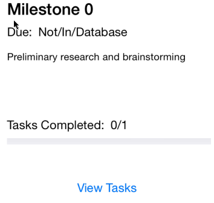
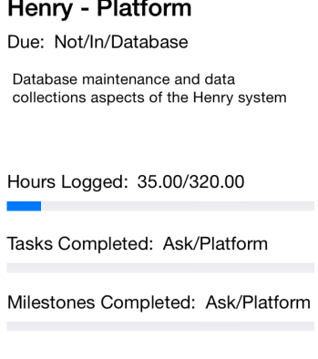

## iOS Sikuli script ## Testing ability to see the status of milestones in a project click() find() click() if exists(): print("It worked") else: print("It didn't work") ## Reset to starting position while exists(): click() ## Test ability to see the progress of the project find() click() find() ## Reset to starting position while exists(): click() ## No current way to test changing status